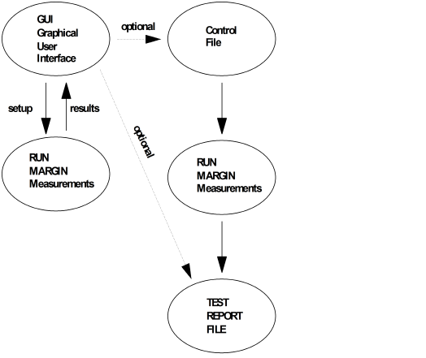

Architecture
The basic architecture of the Pin Margin tool can be seen below.

The Pin Margin tool offers two possibilities to set up and start the pin margin measurement:
- A graphical user interface (GUI) which provides the interactive control of the
measurements. The pin margin tool uses the actually downloaded dataset. The dataset cannot be
changed directly via the user interface. To change the dataset you must execute the appropriate
testsuite in the testfloor. Level, timing, DPS and waveform sets of the used dataset can be
changed in the user interface.
You can view the test results directly in the report window of the user interface or you can create a report file.
- A control file gives you full control of the pin margin tool, even the possibility to
change datasets and to perform an arbitrary sequence of pin margin measurements.
Control files can be created in the user interface. They can be edited and modified afterwards. The main advantage is that a standard pin margin test can be developed and reused on different test systems for the same device.
The measurement results are directed to stdout.
How to create and use control files is explained in detail in the section The Control File.